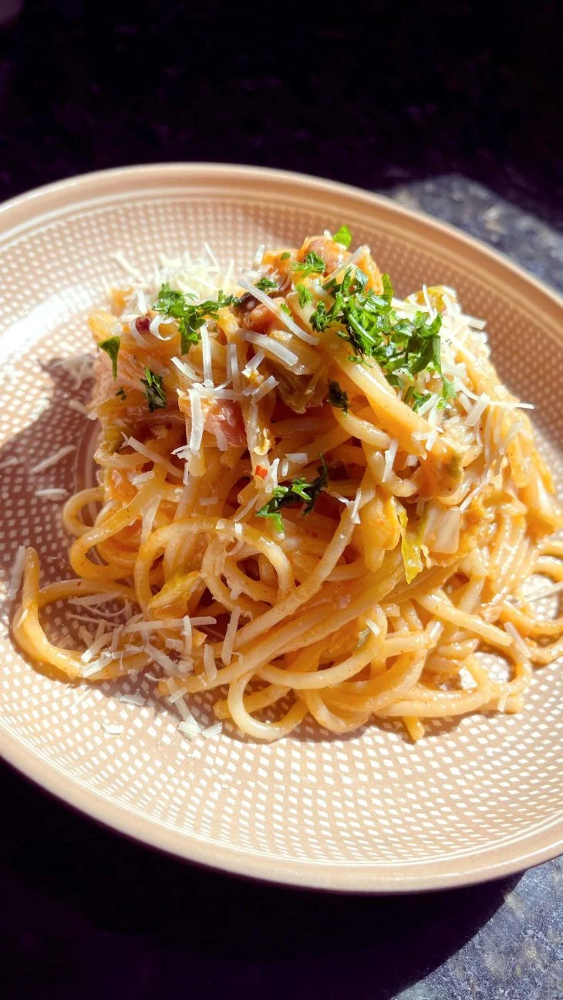

korean carbonara
Welcome to the ultimate guide to making Korean Carbonara! This recipe is for when you’re craving carbonara,
but also craving an Asian flavor.
Follow this simple recipe to create delicious Korean Carbonara.

Ingredients
- 250 grams of spaghetti
- 100 grams of diced bacon
- 1/2 cup chopped kimchi
- 1/2 tablespoon gochujang
- 100 grams of cream
- 25 grams of grated parmesan cheese
Instructions
- Cook the pasta according to the package instructions.
- Fry the bacon.
- Add the kimchi and gochujang to the fried bacon. Sauté well.
- Add the cream, pasta and a little water.
- Mix well until creamy.
- Finish with the parmesan and mix again.
- Now just serve! Enjoy your meal.